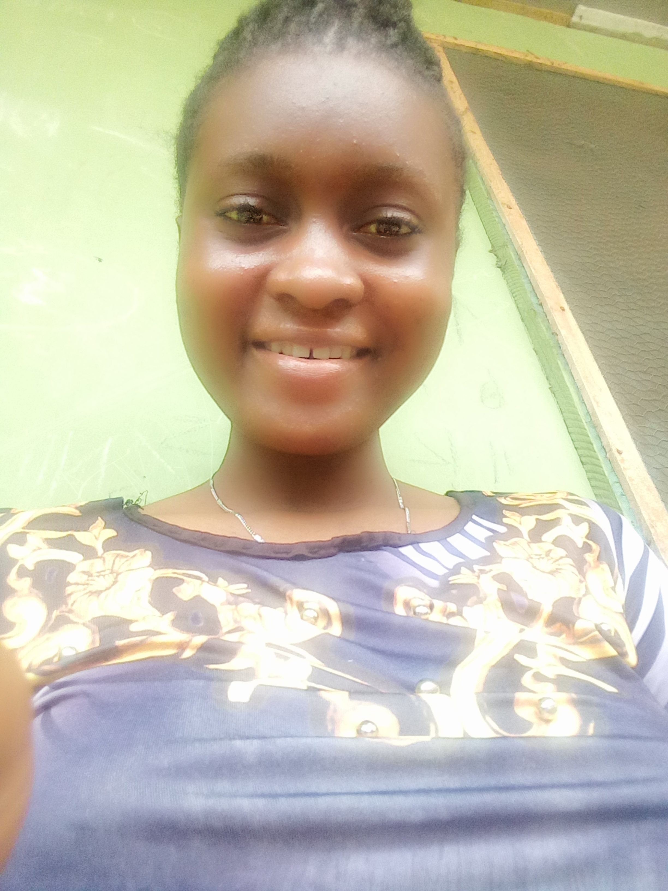

MY ACHIVEMENT

MY ACHIEVEMENT
An achievement is something which someone has succeeded in doing, especially after a lot of effort. Achievement is also the process of achieving something in life. It seems to be connected with action.
No one has ever achieved greatness without dreams. Every achievement is a servitude. My first achievement in life started from my Primary School days when I had a dream of becoming a popular person in
life. My Primary School days was interesting and lively. I started growing gradually and I wrote the Common Entrance Examination
and passed. I was given admission into kings College which was Boarding School throughout. My school was where I faced different challenges and met different types of people. Boarding School is
interesting because is a place where student learn different types of thing.
When I reached JSS 3, I was awarded the neatest student. I wrote my Junior WAEC and I came out with good result. I later gain admission
into Senior Secondary School. I began with my Boarding Lifetime. it was very stressful. It looked as if I just began with my lifestyle. The Senior Secondary school class was very stressful, after my secondary school class
I was waiting foation Science as a Course, which i find very interesting.
NEXT PAGE